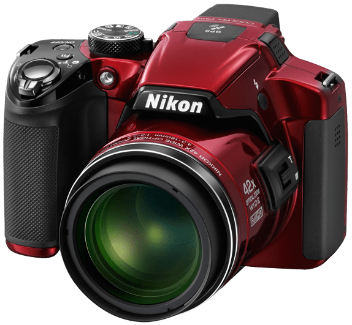
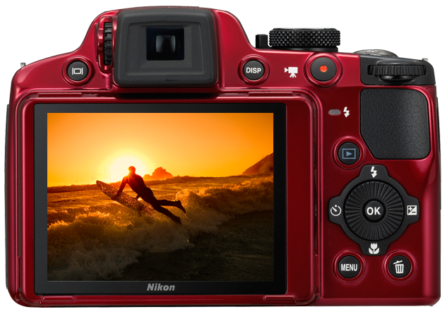
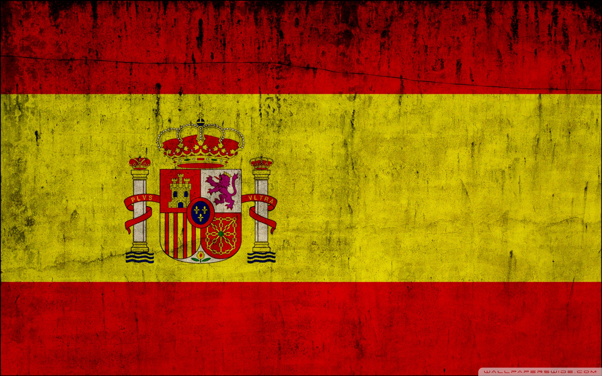
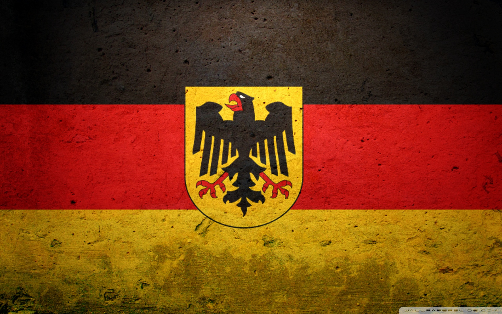

Click the buttons to get or set the volume of the audio player.
Introduction
It all began back in 2015 when I decided to explore what could be accomplished with a bridge camera. In my case, I chose the Nikon P510 as from what I had seen online, it had a brilliant reputation, cracking reviews and the price couldn't have been better! I got mine in a sale for £200 from Amazon UK! The only thing I don't do is shoot in RAW format due to the fact I don't find my self having to touch up images in Photoshop. And also, RAW takes up a whole lot of space when that space could be used for more images!The cameras specifications can be found in the "Equipment" page here.
 
My go-to destinations - In order of preference of course!
#1 Spain
 Located here The Kingdom of Spain, as it’s officially known, is the second largest country in the EU – with an area of 505,955 square kilometres, Spain covers about 85 percent of the Iberian Peninsula, which it shares with Portugal.Spain is my top destination to go to, especially in the summer! I find that Spain has so much to offer. Things such as its street art, statues, tourist attractions and even its fauna. There is something that is bound to make you just say "wow, this is so beautiful. An area which I have been to over 3 or 4 times is Cambrils in Costa Dorada. The weather is perfect from May until the end of August to be able to travel around the area freely and snap some beautiful images. Also, if you wish to take a break from shooting, there is plenty of activites to particapte in. Biking, going on a bus tour, going out to sea on a catamaran or else heading to a restaurant for a few cold ones - you are bound to have a smile on your face while you're there.
#2 Germany
 Located here Germany was the first country in the world to adopt Daylight saving time – DST, also known as summer time. This occured in 1916 in the midst of WWI and was put in place to conserve energy.Germany is my 2nd favorite destination due to its sparse culture. It is home to some of the most beautiful vehicles in the world. With its specialized knowledge in the production of BMW's, Audi's Ford's, Mercedes-Benz and so many others - there will more than likely be a few motors that catch your eye when you are here. I had found myself in Berlin twice and the amount of expensive looking cars made me lose track on counting them. At times I only had seconds to snap an image of the car before it would speed off like a bullet! German art on the Wall of Berlin is just spectacular. As is any of the festivals which occur in Germany. Oktoberfest is an event which can't be missed - there does be such visually appealing food on every street you turn into (this means have your camera at the ready for any meal you come across, them Instagram followers need to see the brilliance). While on the other hand, if you would rather try something a little more common, their is typically a Dunkin' Donuts and Starbucks on every block you go around - which both contain super tasty items. Just be aware that you may become addicted to donuts over a short period of time so go easy on them!